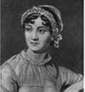

Listen to Part 1:
|
 |
Jane Austen sinh ngày 16 tháng 12 năm 1775. Bà sống tại làng Steventon, thuộc Hampshire, phía Nam nước Anh. Cha bà là mục sư tại nhà thờ Steventon. Jane có sáu anh trai và một chị gái - Cassandra. |
Từ năm 1782 đến năm 1784, Jane và Cassandra học tại một trường nội trú. Từ năm 1785, cha của Jane dạy các cô gái tại nhà. Jane học văn học Anh, tiếng Anh, tiếng Pháp, tiếng Ý và âm nhạc. Bà đọc thơ và tiểu thuyết.
Anh trai của Jane, Edward, sống cùng Thomas và Catherine Knight. Ông bà Knight có một ngôi nhà lớn - Godmersham Park - ở Kent. Jane và chị gái thường đến thăm Edward tại Godmersham Park.
Từ năm 1801, gia đình Austen sống tại Bath, tây nam nước Anh. Tại Bath, Jane và Cassandra tham dự các buổi dạ hội và đến nhà hát. Họ thích khiêu vũ và xem kịch. Nhưng Jane không vui. Bà có phải đã yêu? Chúng ta không biết. Nhưng Jane Austen không bao giờ kết hôn.
Năm 1805, cha của Jane qua đời. Sau đó, bà Austen, Jane và Cassandra sống tại Southampton. Southampton nằm ở bờ biển phía Nam nước Anh. Đây là một cảng lớn. Anh trai của Jane, Frank, sống ở đó. Từ năm 1810, ba người phụ nữ sống tại Chawton, thuộc Hampshire. Jane viết thư và sách. Cassandra trông coi nhà cửa. Họ thăm anh em và gia đình họ. Jane Austen là một phụ nữ tốt bụng, thông minh và dí dỏm. Bà thường cười.
Năm 1816, Jane Austen bị ốm. Cassandra chăm sóc bà. Jane qua đời vào ngày 18 tháng 7 năm 1817. Hưởng thọ 41 tuổi.
Jane Austen không viết nhiều sách. Nhưng bà là một trong những nhà văn Anh nổi tiếng nhất. Các tiểu thuyết của bà gồm: Lý trí và tình cảm (1811), Kiêu hãnh và định kiến (1813), Công viên Mansfield (1814) và Emma (1816). Tu viện Northanger và Sự thuyết phục (1818) được xuất bản sau khi Jane Austen qua đời. Hàng triệu người đã đọc sách của bà. Nhiều bộ phim được chuyển thể từ các câu chuyện của bà.